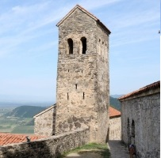
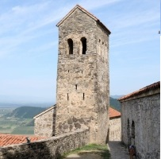
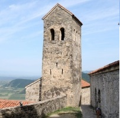

დავით გარეჯის მონასტრის შესახებ VI საუკუნის პირველ ნახევარში წარმოშობილი დავით გარეჯის მონასტერი დაარსებას ევალება ასურელ ბერს, სახელად დავითს. მან და მისმა მოწაფემ ლუკიანმა დასახლდნენ გარეჯის უდაბნოში მოკრძალებულ ბუნებრივ გამოქვაბულში, დაადგინეს ქვაკუთხედი მონასტრისთვის, რომელიც მოგვიანებით ცნობილი გახდა როგორც დავით ლავრა. დავით გარეჯის ლავრა წარმოიშვა, როგორც სამონასტრო ცხოვრების ბირთვი, რომელიც თანდათან ფართოვდება და სატელიტური დაწესებულებები წარმოიშვა. აღსანიშნავია, რომ აკადემიკოს გ. ჩუბინაშვილის კვლევამ აღიარა თორმეტი მონასტრის ხსენება, თუმცა არსებული მტკიცებულებებით მხოლოდ შვიდი იყო დასაბუთებული. ეს „თორმეტი“ ხშირად განიხილებოდა, როგორც ქრისტიანული სიმბოლური წარმოდგენა. პლატონ იოსელიანმა დავითის ლავრის გარდა კიდევ თერთმეტი მონასტერი ჩამოაყალიბა: აღდგომის წამებული, ბერთუბანი, დოდოს რქა, იოანე ნათლისემელი, ჩიჩხიტური, თეთრ-სენაკები, მაგაზანა ანუ მღვიმე, კოლაგორი, მოხათული, ვერუქარაი. ვახტანგ VI-ის ლექსში მოხსენიებულია დავით ლავრა, ბერთუბანი, ჩიჩხიტური, ნათლისმცემელი, წამებული და დოდო. ადრინდელ ფეოდალურ ხანაში გარეჯის მონასტრები განლაგებული იყო კახეთის მხარის სამხრეთ საზღვართან. ეს მონასტრები ამშვენებს გარეჯის მთებს, მდინარე მტკვრის პარალელურად და ვრცელდება ივრის ხეობის ქვედა რაიონში. დროთა განმავლობაში ჩამოყალიბდა გამოქვაბულის ფორმის სამონასტრო კომპლექსები, მათ შორის წამებული, ნათლისემელი, ჭიჩხითური, თეტრსენაკები, დოდოს რკა, უდაბნო, აღდგომის წამებული, ბერთუბანი, მღვიმე, ქოლაგირი, დიდი ქვაბები, ვერანგარეჯა, პირუქმართები. დავით გარეჯის მონასტრების მოღვაწეობამ დიდი გავლენა მოახდინა საქართველოს რელიგიურ და კულტურულ ქსოვილზე. XII საუკუნის დასაწყისში დავით აღმაშენებელმა დავით გარეჯის მონასტრები სამეფო სამფლობელოში გააერთიანა, ხელი შეუწყო მათ განვითარებას და გაათავისუფლა სახელმწიფო გადასახადებისაგან. 1265 წელს მონღოლთა ჯარებმა ბერკე-ხანის მეთაურობით გაძარცვეს და გაანადგურეს დავით გარეჯა და მისი შემოგარენი.
ერთი ადამიანის საფასური
ორი ადამიანის საფასური
სამი ადამიანის საფასური
ოთხი ადამიანის საფასური
